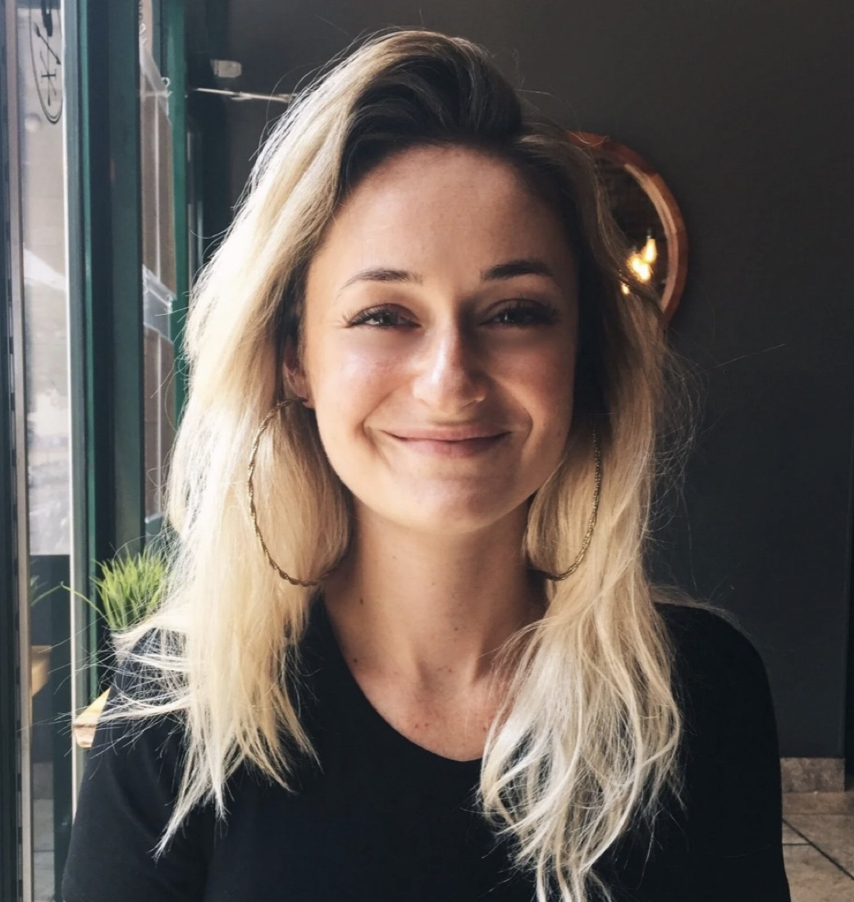

Over ons
Ons ontstaan
L’Dor Vador is gevormd door de gezamenlijke ervaring van de oprichters, Hannah Berkeley Cohen en Cornelis Greiwe, die samen meer dan 100 groepsreizen leidden in bestemmingen als Cuba en Suriname. Onze aanpak put uit de journalistiek, uit maatwerkreizen en uit ruim drie decennia gecombineerde ervaring in special-interest toerisme.
Wij delen een passie voor het verkennen van historische en culturele complexiteit, en voor het verbinden van mensen, plaatsen en gebeurtenissen om het grotere verhaal zichtbaar te maken. Deze pijlers vormen elke reis die wij maken.

Medeoprichter
Hannah Berkeley Cohen
Hannah Berkeley Cohen komt uit Ohio en noemt het Caribisch gebied sinds 2012 haar thuis. Na een semester aan de Universiteit van Havana verhuisde zij naar Cuba om de jongerencultuur van het land, het dagelijks leven van de Cubaanse middenklasse en de slinkende Joodse gemeenschap van het eiland vast te leggen. In 2015 was zij vaste correspondent van The New York Times in Havana geworden, met verslaggeving over het Amerikaanse buitenlandbeleid ten aanzien van Cuba, de dood van Fidel Castro en de historische bezoeken van president Obama en de paus. In Havana ontmoette zij tientallen groepen die georganiseerd waren door de JDC (American Jewish Joint Distribution Committee), door synagogen in heel Noord-Amerika, en Joodse reizigers die voor het eerst naar Cuba terugkeerden sinds hun ouders of grootouders er een halve eeuw eerder waren vertrokken.
Het werk voor grote media gaf Hannah zeldzame toegang tot de gelaagde Cubaanse samenleving; toen de reisregels voor Amerikanen in 2015 werden versoepeld, kon zij haar inzicht in het eiland delen, met als doel een genuanceerd Cuba te tonen: voorbij rum, sigaren, kleurige gebouwen en oldtimers.
Zij richtte Cuba Risingop, een maatwerkreisbureau voor Amerikanen die de complexe werkelijkheid van het moderne Cuba wilden ontdekken. Van ontmoetingen met ambassadeurs tot gesprekken met zwarthandelaren in valuta, en van kookworkshops met chefs met Michelinsterren tot huiselijke kooklessen bij grootmoeders in bescheiden keukens: Cuba Rising bood intieme culturele uitwisselingen met mensen uit alle lagen van de Cubaanse samenleving. Elke reis was sterk op maat, met groepen van maximaal acht personen voor flexibiliteit en diepgang. Hannah spreekt vloeiend Engels en Spaans.
Met haar ervaring in Cuba verhuisde Hannah in 2024 naar Curaçao om zich te verdiepen in de Joodse geschiedenis en het erfgoed van het eiland en cultureel relevante programma's te ontwikkelen voor Noord-Amerikaanse reizigers.
Medeoprichter
Cornelis Greiwe
Cornelis Greiwe is een veelzijdig toerisme-ondernemer, vloeiend in Nederlands, Duits, Engels en Spaans, met ruim 20 jaar ervaring in de reis- en hospitalitybranche. Als oprichter van CULTURESCAPE, een destination management company op Curaçao, richt hij zich op het creëren van cultureel rijke reiservaringen.
In zijn loopbaan bekleedde Cornelis leidinggevende functies waarin hij reisproducten ontwikkelde, de regionale bereikbaarheid verbeterde en hospitalityprojecten leidde in markten als Cuba, steeds gericht op betekenisvolle en authentieke ervaringen voor reizigers.
Cornelis brengt een passie mee voor cultureel betekenisvolle evenementen die mensen verbinden door gedeelde ervaringen. Naast het leiden van het kantoor van zijn bedrijf in Havana bedacht en organiseerde hij tijdens zijn jaren op Cuba HAVANA PLAY, een reeks elektronische dance-evenementen die opkomende Cubaanse dj's en producers een podium gaf voor publiek van duizenden jonge Cubanen. Ruim een jaar lang was dit het best bezochte livemuziekevenement van het land.
Samen vormen deze ervaringen ons onderscheidende perspectief: wij verkennen geschiedenis en cultuur in de diepte, kijken voorbij het vertrouwde en creëren betekenisvolle verbindingen tussen reizigers en de mensen, plaatsen en verhalen die een bestemming bepalen.